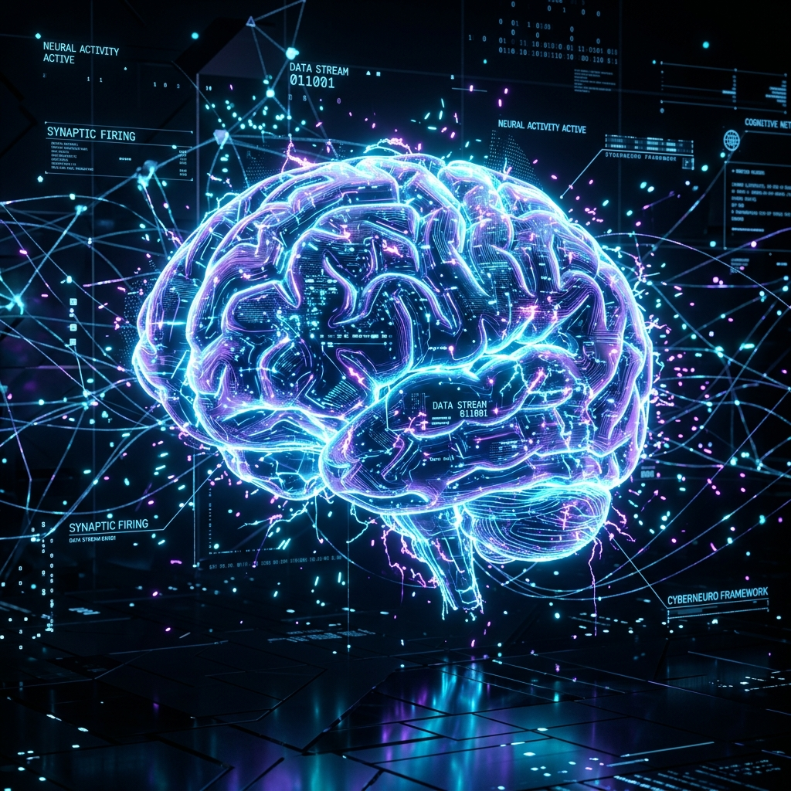
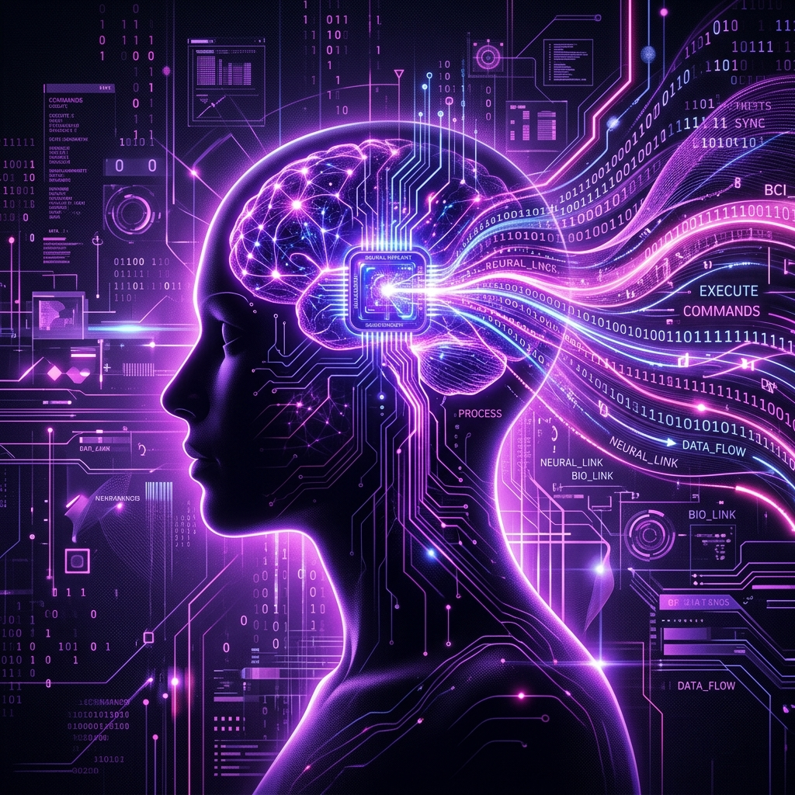
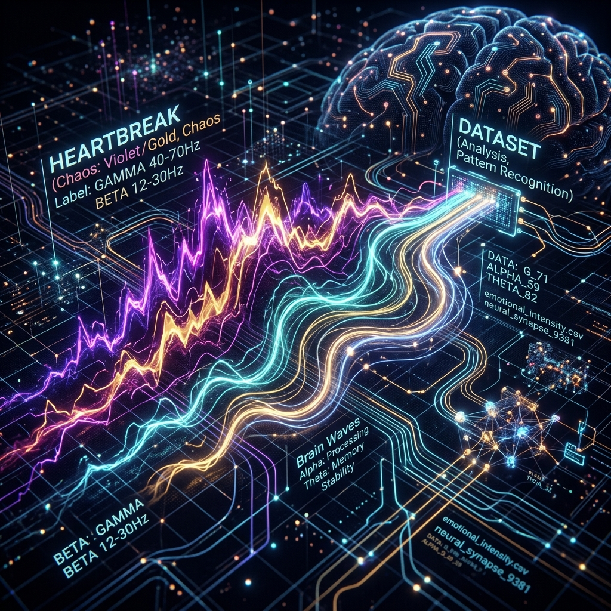

How Physics Decodes Thoughts, Memories, and Emotions
"Physics may eventually decode the human soul. Every memory, thought, and emotion leaves a physical, electrical trace."
Roll No: 241980042
The human brain is the most complex electrical information processor ever discovered, housing around 86 Billion neurons.
Bioelectricity & Electrostatics: A neuron at rest maintains a membrane potential of -70mV via ion imbalances (Na⁺, K⁺, Cl⁻).
Thoughts and feelings are not abstract, mystical events detached from the body—they are rooted directly in electrochemical energy flow.

Thoughts emerge from massive, synchronized neural networks firing electrical patterns across the cortex. Hover over cards or trigger the live spark!
Sodium channels open. Na⁺ rushes in, spiking the negative resting voltage to a positive potential.
Potassium channels open. K⁺ rushes out, restoring and briefly overshooting the internal negative state.
Sodium-potassium pumps restore the initial ion equilibrium, priming the neuron for its next signal.
Memories are not "ghosts" floating in the mind; they physically alter the neural connections over time.
Synaptic Plasticity: The strength of electrical signals passing between synapses dynamically adjusts with use or disuse.
Neuroplasticity: Experiences physically reshape the neural architecture. Your past changes your neural structure.
Amputees often feel intense pain in limbs that no longer exist. Why? Because pain is a stored electrical memory representation. It is generated internally by the brain's lingering neural circuits, even in the complete absence of physical sensory inputs.
"If your memories are stored purely as physical electrical pathways, what does that mean for your identity?"
Emotions are not abstract magic—they correlate with specific electrical wave patterns.
Affective Computing: Physics decodes emotional weather, proving every mood leaves a physical signature.
Music alters neural rhythms. Songs activate stored circuits, proving sound changes physical brain states.
Select an emotion to load neural data and morph background states:
Electroencephalography (EEG) detects collective voltage fluctuations generated by millions of active neurons. Our emotions are not silent; they ripple through the brain as changing rhythms.
| Wave | Frequency | Signal Profile | Mental State |
|---|---|---|---|
| Gamma | 30+ Hz |
|
High-level cognition, focus |
| Beta | 13–30 Hz |
|
Alert thinking, anxiety |
| Alpha | 8–13 Hz |
|
Relaxed awareness, calmness |
| Theta | 4–8 Hz |
|
Deep dreams, meditation |
| Delta | 0.5–4 Hz |
|
Deep restorative sleep |
BCIs convert collective neural signals directly into digital binary instructions.
Allows paralyzed, stroke, or ALS individuals to move cursors, type mentally, or control advanced prosthetics.
Thought-to-Speech Implants: Modern neuro-technologies can decode the "inner monologue" directly from electrical brain activity.

Our growing ability to decode the electrical nature of the brain is leading to revolutionary advancements across medicine and technology:
Locked-In Patient Support: Restoring standard communication lines to Completely Locked-In Syndrome (CLIS) patients.
Stroke Rehabilitation: Constraint-Induced Movement Therapy (CIMT) uses bio-feedback to rewire active neural movement pathways.
Affective Computing: Emerging AI systems that recognize stress, anxiety, and emotions, adapting technology to human states.

The brain is an incredibly intricate, high-voltage electrical machine, making it highly fragile. Chronic stress, severe emotional trauma, and persistent anxiety are not abstract "feelings"—they are physical reorganizations of biological neural networks.
Bio-damage: High cortisol & adrenaline chronically shrink prefrontal synapses.
Electrical Loop: Trauma patterns fire involuntarily in permanent feedback loops.
As Brain-Computer Interfaces (BCIs) and neuroimaging reach extreme levels of sensitivity, we enter the era of neuro-surveillance. When algorithms can decode inner monologues, reconstruct dream imagery, and read subconscious emotional states directly from EEG data, where does the privacy of the human soul end?
Neural Data Ownership: Prevent corporate commercialization of deep brainwaves.
Cognitive Liberty: Absolute protection against forced neuro-scanning.
The Ultimate Physics Paradox: Science can measure every physical, chemical, and electrical correlate of human emotions. We can track ion flow, map synapses, and record brainwave frequencies. Yet, we still have absolutely zero physical or mathematical formulas to explain qualia—the actual internal, subjective experience of feeling.
Explanatory Gap: Why does a physical voltage spike translate into the feeling of pain?
Observation Mystery: Deciphering the machine is easy; explaining the observer is unsolved.
What happens when machines understand human emotions better than humans understand themselves?
For centuries, thoughts were abstract. Today, we decode, measure, and convert them to datasets.
If consciousness is only information processing... why does it feel like something to be alive?
Thank You! Questions or Thoughts?